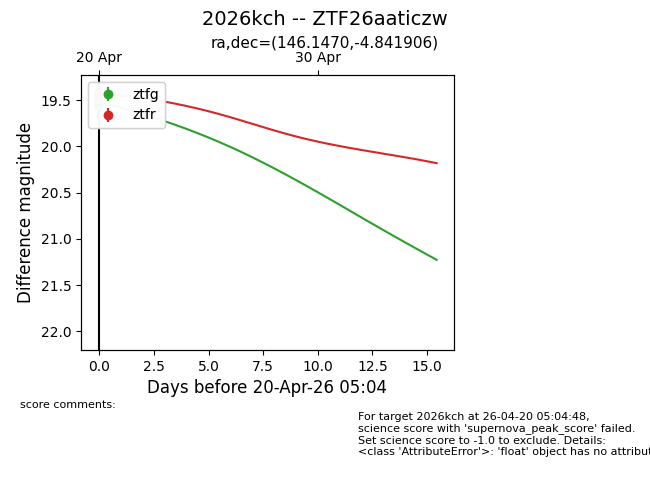
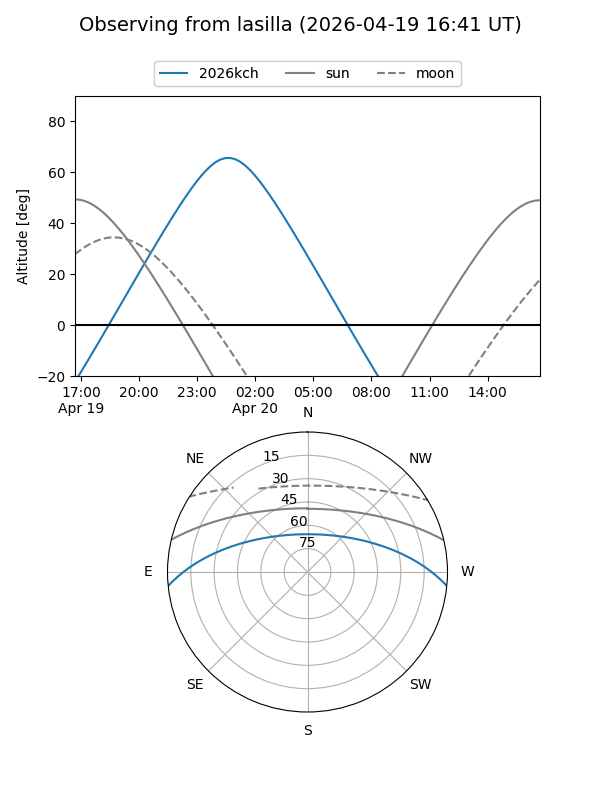
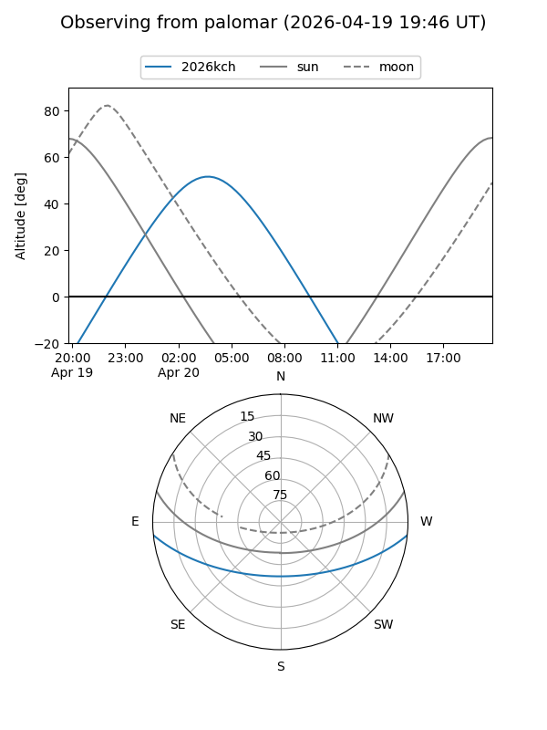
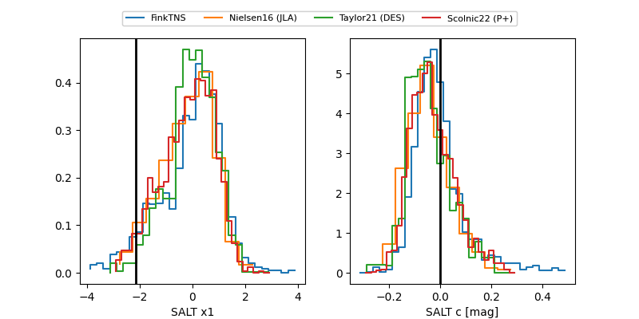

2026kch
Target 2026kch at 2026-04-20 05:14
Aliases and brokers:
FINK: link
Lasair: link
ALeRCE: link
TNS: link
YSE: link
alt names
ZTF26aaticzw (ztf,fink_ztf)
2026kch (tns,yse)
Coordinates:
equatorial (ra, dec) = 146.1470,-4.84191
equatorial (HMS+DMS) = 09:44:35.28,-04:50:30.86
galactic (l, b) = (240.9931,+34.71978)
Flags:
Photometry:
last ztfg=19.50, ztfr=19.43
2 ztfg, 1 ztfr detections
Lightcurve

Visibility


Additional plots
